世界のはじまり
わたしたちはうつくしい世界に
生きています。あなたのまわり
にある、いろいろなものを見て
みてください。どれもすてきで
すね。これから、そのはじめの
ときにもどって、世界がどのよ
うにはじまったのか、聖書が教
えていることを見てみましょう。
はじめに、神さまが天と地を
おつくりになりました。神さま
はくらやみのうえをうごきなが
ら、「光よ、あれ！」と言われ
ました。そして、光を「昼」と
よび、やみを「夜」とおよびに
なりました。
3日目がおわりました。
それから神さまは、空にたくさ
んの光をおつくりになりました。
昼のために太陽を、夜のために
月とすべての星をおつくりにな
りました。4日目がおわりました。
また、水をおよぐ魚と、空をと
ぶ鳥もおつくりになりました。
「子どもをうみなさい」神さま
は言われました。「世界を水の
はねる音、鳥が歌う声でみたし
なさい」5日目がおわりました。
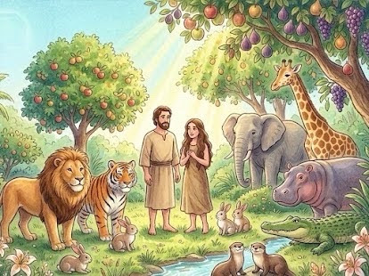
どうぶつが生まれる
つぎに神さまは、どうぶつを
おつくりになりました。家畜、
野のけもの、そして地をはう
どうぶつをおつくりになりまし
た。「もうひとつ、つくるもの
がある」神さまは言われました。
「あらゆるものの中でいちばん
とくべつなものだ」そして神さ
まは、人間の男と女を、ご自分
のすがたににせておつくりにな
りました。
「子どもをうみなさい」神さま
は言われました。「この世界を
おさめなさい。魚や鳥、どうぶ
つのせわをするのです」
6日目がおわりました。
できました！神さまは、おつく
りになったすべてを見られて、
「とてもよい！」と言われまし
た。そして7日目はお休みにな
り、この日をとくべつな日にし
ました。7日目がおわりました。
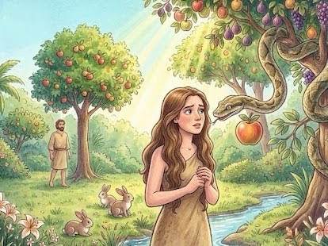
へびのゆうわく
はじめの男と女であったアダム
とエバは、神さまがつられた
うつくしい園にすんでいました。
ところが、あくまがずるがしこ
いヘビになってやってきて、
ふたりをわるいことにさそいま
した。
「神は、これらの木の実を食べて
はならないといったのかい？」
ヘビはエバに聞きました。
「園のまん中にある木だけよ」
エバは答えました。
「あの木の実だけは、食べると
死んじゃうの」
「死なないさ」ヘビは言いました。
「神にはあの実を食べてほしく
ないわけがあるからさ。きみたち
が神のようになれてしまうから
だよ。神の知っていることを、
きみたちも知ることになってし
まうからさ」
つみ を おかす
エバはその木の実を食べてみま
した。そして、そばにいたアダ
ムにもあげると、アダムもそれ
を食べました。するとそのとき、
ふたりにはそれまで知らなかっ
たことがわかってしまったのです。
そのひとつは、自分たちがはだ
かだということでした。さっそ
くふたりは、木の葉をぬいあわ
せ、体をかくしました。とつぜ
ん、こわく、はずかしくなって
しまったのです。
「アダム！エバ！」神さまが
およびになりました。
「わたしたちは、ここにかくれて
います」アダムが言いました。
「わたしたちは、はだかだから
です」「あの木の実を食べて
しまったから、知ったのだな」
神さまはかなしみました。
人のせいにする
するとアダムはエバのせいにし、
エバはヘビのせいにしました。
神さまは言われました。
「ヘビよ、おまえは地をはって
くらさなければならない。
やがて、女の子孫がおまえを
うちまかすだろう。エバ、
子どもをうむことはとても
いたいことになる。アダム、
食べ物をそだてることは
たいへんなことになる」
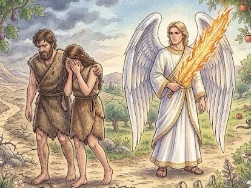
らくえん から おいだされる
神さまは、アダムとエバのために
ふくをつくり、ふたりを園から
おいだされました。そして
火のついたつるぎをもった
天使をおき、ふたりがもどって
くることができないように
されたのでした。
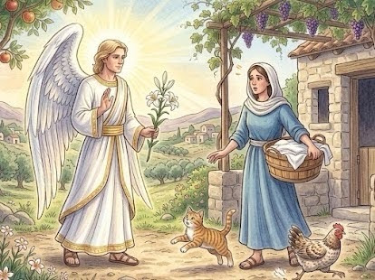
てんし の しらせ
罪（つみ）は 世界中に
広がりました。罪をおかさない
人は いません。そして、
罪のせいで 人は 死ななければ
なりません。しかし、罪が
あるからといって、神さまの
わたしたちへの あいが
なくなることは ありません
でした。神さまには
ごけいかくが あったのです！
天使ガブリエルは マリアに
言いました。「あなたには
赤ちゃんが できますよ」
マリアは 聞きました。
「どのようにですか。わたしは、
けっこんしていません」
「神さまが、あなたのところに
来られるのです。赤ちゃんは
神の子と よばれます」
マリアは そのことばを
信じました。
マリアは ヨセフと
けっこんの やくそくを
していました。ヨセフは
マリアの話を しんじません
でした。そこで、ヨセフの
ところにも 天使が やって
きました。
「マリアは、うそを ついて
いません。生まれてくる
赤ちゃんは 神の子です。
その子を イエスと
名づけなさい」
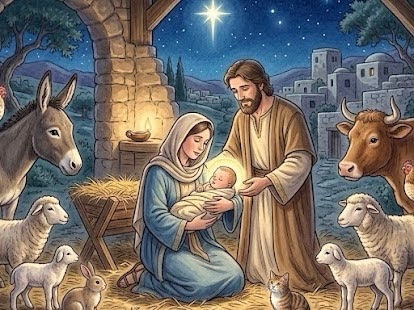
いちばん はじめての クリスマス
それから 何か月かして、ヨセフと マリアは、
ヨセフの ふるさと ベツレヘムへ たびに 出ました。
長い たびが おわり、マリアの 赤ちゃんは
もうすぐ 生まれそうでした。
ところが、まちの やど屋さんは どこも いっぱいです。
それで、赤ちゃんは 神さまの 子なのに、
おんもに ある かちくごやで 生まれました。
赤ちゃんは ぬのに くるまれて、
ほしくさの ベッドに ねかされました。
ヨセフと マリアは、赤ちゃんを「イエス」と 名づけました。
その夜、おかに いた ひつじかいたちに、
天使が あらわれました。
「よい しらせが ありますよ」天使は 言いました。
「みんなの すくいぬし（たすけてくれる 王さま）が
お生まれに なりました。
ベツレヘムの まちに いて、ほしくさの ベッドで
ねていますよ」
すると とつぜん、たくさんの 天使たちが あらわれて、
夜空が 天使で いっぱいに なりました。
「天の 神さま、ハレルヤ！」
天使たちは みんなで 神さまを ほめたたえました。
「神さまが よろこぶ 人たちに、
へいあん（おだやかな こころ）が ありますように」
天使が いなくなると、ひつじかいたちは
急いで まちに 行きました。
そして、天使の 言ったとおり、ほしくさの ベッドで
ねている 赤ちゃんを 見つけました。
イエスさまに 会えた ひつじかいたちは、
とっても よろこんで まちに 行きました。
そして、自分たちが 見た すばらしい できごとを
みんなに つたえ、神さまを ほめたたえました。
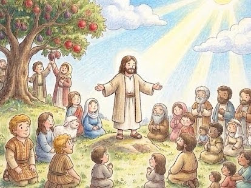
やまのうえ での おしえ
ひろーい はらっぱが ある、
やまの うえ。イエスさまが
すわると、たくさんの 人が
あつまってきました。みんな、
イエスさまの おはなしを
たのしみに しています。
「こころが やさしい 子は、
とっても しあわせです」
おともだちが 泣いていたら、
「どうしたの？」って きいて
あげられる子。ケンカを しても、
「ごめんね」って さきに 言える子。
そんな やさしい こころを、
神さまは 大好きでいて
くださいます。
「みんなは、せかいを てらす
ひかりですよ」まっくらな
お部屋でも、ロウソクが
ひとつあれば ぱっと 明るく
なるよね。みんなの ニコニコ
笑顔や、やさしい 言葉も、
その ひかりと おなじです。
まわりの 人を ポカポカにする、
大切な ひかりなんです。
だから、その ひかりを
かくさないで、みんなに
たくさん 見せてあげてね。
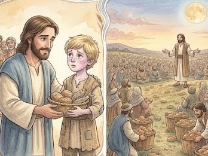
２ひきの さかなと ５つの パン
ある日、たくさんの 人たちが
イエスさまの おはなしを ききに あつまってきました。
みんな おはなしに むちゅうで、
気がつくと おなかが ペコペコです。
でも、食べるものは どこにも ありません。
そんなとき、ひとりの 男の子が やってきました。
「ぼくの おべんとう、どうぞ。みんなで 食べてください」
男の子が もっていたのは、小さな さかな ２ひきと、
パンが ５つ。
それだけでは、みんなの おなかを いっぱいに することは
できません。ところが、イエスさまが 「ありがとう」と
おいのりを すると……。ふしぎなことが おこりました！
パンと さかなが、どんどん、どんどん、ふえていきます。
かごから あふれて、みんなが おなかいっぱい 食べても、
まだ あまるくらいに なりました。
男の子の やさしい 「どうぞ」の きもちが、
みんなを しあわせな えがおに かえてくれたのです。
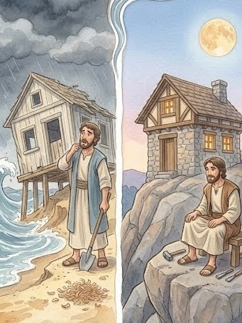
すなの いえと いわの いえ
あるところに、おうちを
たてようと している ２ひとの
人が いました。ひとりの 人は、
さらさらした すなの うえに、
いそいで おうちを たてました。
「かんたんに たてられて、
らくちんだなあ」
すなの上に たてた おうちは、
あっというまに かんせい
しました。
もうひとりの 人は、かたい
いわを さがして、そのうえに
おうちを たてました。
いわを けずるのは とても
たいへんでしたが、
いっしょうけんめい
じょうぶに つくりました。
ある日、はげしい 雨が
ふって、強い 風が ふいて
きました。大きな お水が
おしよせて、おうちを
どんどん たたきつけます。
すると、どうなったでしょう。
すなの うえに たてた おうちは、
土だいが ぐらぐら ゆれて、
「ガラガラガッシャーン！」
あっというまに こわれて、
ながされてしまいました。
でも、いわの うえに たてた
おうちは、びくとも しません。
強い 風が ふいても、
びしょびしょに なっても、
ずっと どっしりと
たっていました。
イエスさまの おはなしを
よく きいて、そのとおりに
する人は、この いわの うえに
おうちを たてた 人と
おなじです。
どんなに つらいことがあっても、
まけない 強い こころを
もてるんですよ。
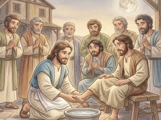
でしのあしをあらう
ある日の ゆうごはんの まえ、
イエスさまは とつぜん
タオルを こしに まいて、
お水の はいった たらいを
用意しました。
そして、おでしさんたちの
ところへ 行き、ひとり
ひとりの「あし」を、
ていねいに ゴシゴシと
あらいはじめたのです。
そのころの 国では、おそとは
すなばかりだったので、
あしは とっても
よごれやすい 場所でした。
あしを あらうのは、いつも
いちばん 立場の ひくい
「めしつかい」の 人が する
お仕事です。
びっくりした
おでしさんたちは、
「せんせい！ わたしたちの
あしを あらうなんて、
とんでもないです！」と
言いました。
だって、イエスさまは
この中で いちばん えらい
せんせいだったからです。
でも、イエスさまは
にっこり 笑って 言いました。
「わたしは みんなの
せんせいだけど、こうして
みんなに つくすために
あしを あらったんだよ。
あなたたちも、これからは
『自分の ほうが えらい！』と
いばるのではなくて、
あいてのことを 大切に おもって、
自分から すすんで
たすけあって、やさしくして
あげてね」
自分を ひくくして、あいてを
心から おもいやること。
それは、神さまが とっても
よろこんで、みんなを
しあわせにしてくれる、
「やさしさの ルール」
なんだよ。
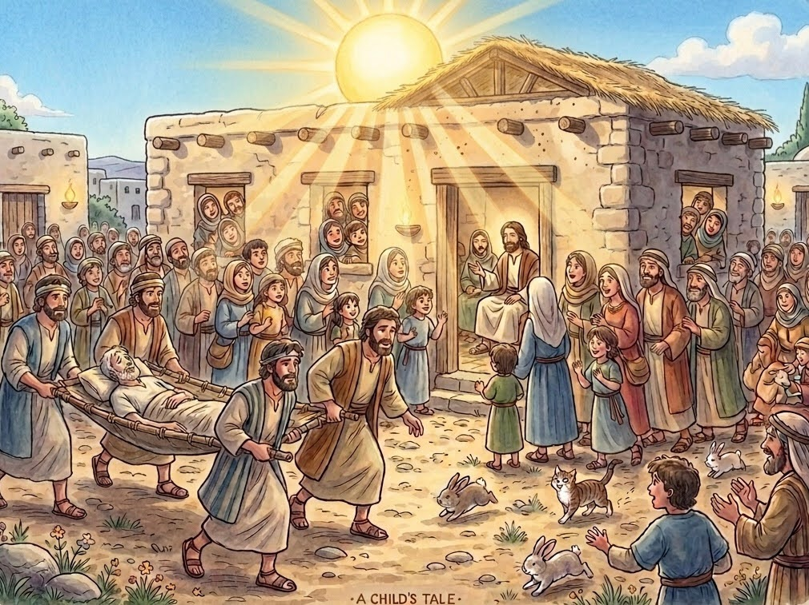
友だちはこんで
あるところに、からだが
じゆうに うごかせない、
ちゅうぶの びょうきの
おとこのこが いました。
おとこのこは いつも
ベッドの うえで
すごしていました。
あるひ、まちに
イエスさまが やってきました。
「イエスさまなら、きっと
なおしてくれる！」
４にんの おともだちは、
おとこのこを ベッドに
のせたまま、いっしょうけんめい
はこんでいきました。
でも、イエスさまの まわりには
ひとが いっぱいで、なかへ
はいることが できません。
「どうしよう……。そうだ！
おやねに のぼろう！」
おともだちたちは、なんと
おうちの やねに のぼって、
あなを あけました。
そして、おとこのこが
ねている ベッドを、なわで
ゆっくり ゆっくり
おろしたのです。
めのまえに おりてきた
おとこのこを みて、
イエスさまは にっこり
わらいました。
「きみたちの しんじる
こころは すごいね。
さあ、おきなさい」
すると、ふしぎなことに
おとこのこの からだに
ちからが わいてきました。
おとこのこは じぶんで
すくっと たちあがり、
ベッドを かついでおうちに
かえっていきました。
おともだちの 「たすけたい！」
という やさしい きもちと、
あきらめない こころが、
きせきを おこしたのです。
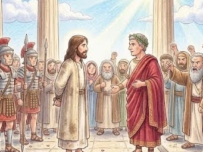
しんぱん
イエスさまが、つかまって
しまいました。町で いちばん
えらい ピラトさんの 前に
つれていかれました。
ピラトさんは、イエスさまを
みて 言いました。
「この人は、なにも わるい
ことは していない。だから
はなしてあげよう」
ところが、イエスさまのことを
きらいな わるい 先生たちが、
大きな こえで さけびました。
「だめだ！ じゅうじかに
つけろ！ はなしては いけない！」
わるい 先生たちは、みんなを
だまして、イエスさまを
やっつけようと したのです。
ピラトさんは、こまって
しまいました。みんなが
あまりに こわい 顔で
おこって いるからです。
とうとう ピラトさんは、
イエスさまを じゅうじかに
つけることに してしまいました。
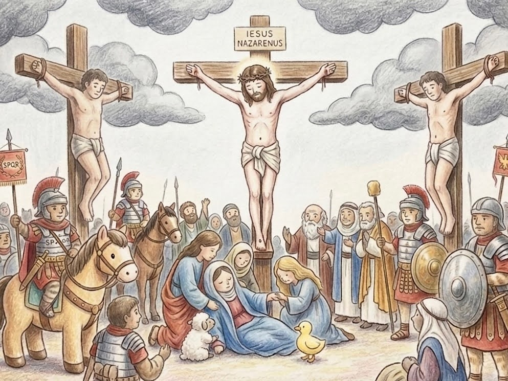
いちばんの おおきな あい
イエスさまは、なにも わるい
ことを していないのに、
おもい じゅうじかを かついで
あるきました。
それは、わたしたちの
かわりに、イエスさまが
がまんして くださったのです。
やまの うえに つくと、
イエスさまは じゅうじかに
はりつけに されてしまいました。
てあしも、からだも、
とっても いたくて、
くるしいはずなのに、
イエスさまは こう おいのりを
したのです。
「かみさま、この人たちを
ゆるしてあげてください。
じぶんたちが なにを して
いるのか、わからないのです」
イエスさまを いじめた
ひとたちのことまで、
イエスさまは ゆるして、
あいして くださいました。
空が まっくらになり、
やがて イエスさまは、
しずかに いきを ひきとりました。
「すべてが おわった」
それは、わたしたちの つみを
ぜんぶ イエスさまが
しょってくださった、
とくべつな しるしだったのです。
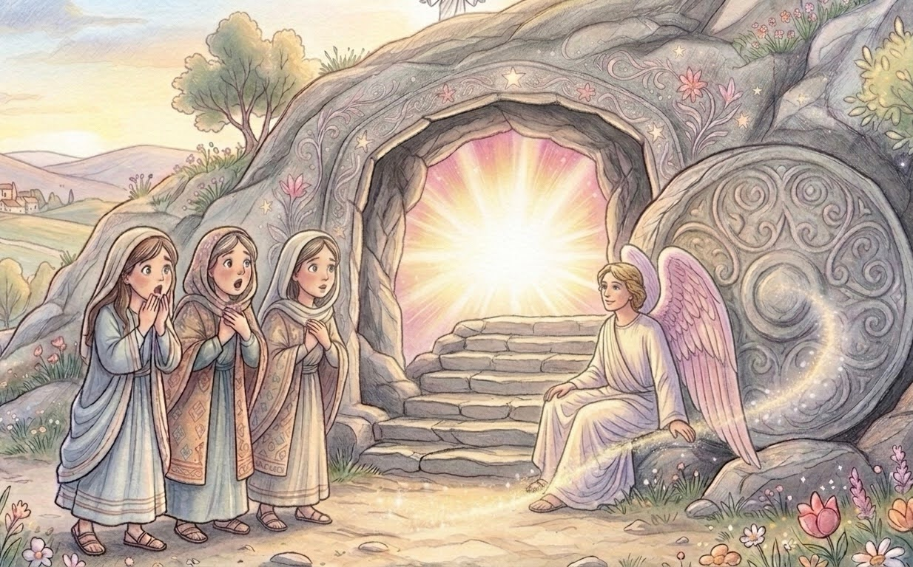
ふっかつ
イエスさまが しんでから、
３かめが たちました。
おんなの人たちが、かなしい
きもちで おはかに いくと……。
なんと、おはかの いりぐちの
大きな いわが、ゴロゴロと
わきに のけられていました！
なかを のぞくと、
イエスさまの すがたは
どこにも ありません。
そこへ、キラキラかがやく
てんしが あらわれました。
「おどろかなくても いいですよ。
イエスさまは おきられました。
まえに おっしゃったとおり、
いきかえられたのです！」
おんなの人たちは、びっくり！
でも、すぐに うれしさで
いっぱいになりました。
いそいで おともだちの
ところへ はしっていきました。
すると、みちの とちゅうで
「おはよう」と こえが
しました。そこに いたのは、
ふっかつした イエスさまです！
イエスさまは、しに うちかって、
いまも いきて おられます。
わたしたちと いっしょに
いてくださるのです。
「おめでとう！ ハレルヤ！」
せかいじゅうが よろこびに
つつまれた、すてきな
あさになりました。
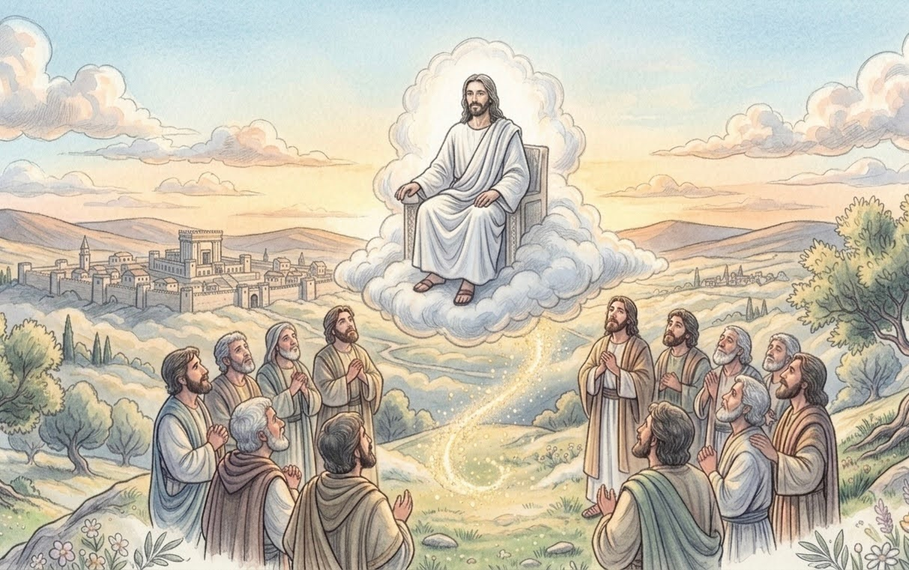
ずっと いっしょだよ
ふっかつした イエスさまは、
お弟子さんたちの まえに
あらわれました。
「みんな、しんじなさい。
わたしは ほんとうに
いきかえったのですよ」
イエスさまは、お弟子さんと
ごはんを たべたり、
おはなしを したりして、
４０にちの あいだ、
いっしょに すごしました。
そして、おわかれの
ときが きました。
イエスさまは やまの うえで
みんなに 言いました。
「せかいじゅうの 人たちに、
神さまの あいを つたえてね。
わたしは 天に かえるけれど、
いつでも、どこでも、
あなたたちと いっしょに
いますよ」
そう言うと、イエスさまは
ふわふわと お空へ
のぼっていきました。
雲に つつまれて 見えなく
なるまで、お弟子さんたちは
ずっと 見送っていました。
イエスさまは 天の 王さまの
お席に すわって、いまも
わたしたちのことを
ニコニコ 見守って
くださっていますよ。